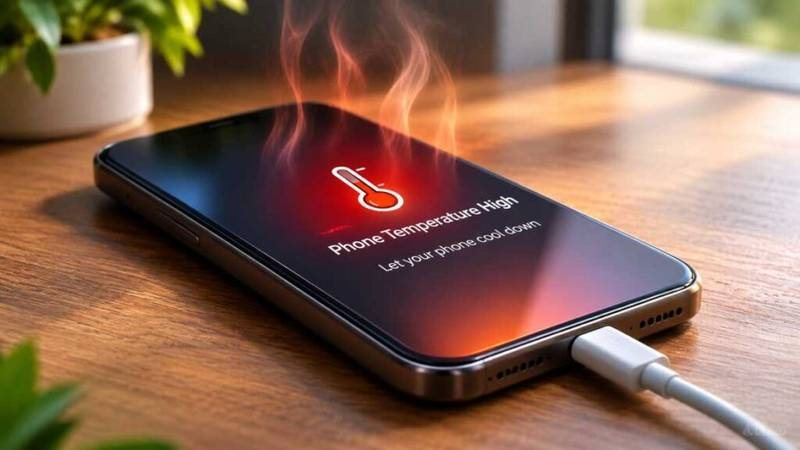

Technology
Stop Charging Your Phone to 100%: The Battery Myth Killing Your Phone
We have all been trained to worship 100%Full tanks,full Your phone says "charge to 100%" and you feel accomplished.In Ion lithium physics,you just hurt your phone

.
A lithium ion cells live by voltage.At 0% it sit at 3.0%.At 100.0v it is squuezed at 4.0V .That high voltage is stressful .It oxidizes the electrolyte and crashes the nickel manganese cobalt cathode.Every full charge is a micro injury.
Heat is the accomplice, charging to 100% and leaving it plugged in overnight keeps the battery at high voltage and high temperature 35—40 degree celcius for six That's the worse combination for longevity.This is why Apple and Samsung now include "Optimized battery charging to 80%.There for dsgh fuhsmkare not saving electricity,they are saving electricity.
Then there is the calender aging.Even if one doesn't use their phone ,a battery stored at 100% degrades faster than one stored one at 40%.One year ago 100% at 25% is equal to 4% loss.Your drawer is killing your spare phone.
Dr. Peter Oyoo on what normal students in Rongo University should do,"Stop thinking like a fuel tank.Think like a rubber band.Streching it to max everytime weakens it.The sweet spot for lithium ion is ,20%-80% rule . Charge to 80% for daily use.let it drop to 20% then charge.Always used the 2-80 rule.Only let it go to 100% when you are traveling to upcountry."
The smartest battery is not a full one.It a half full one